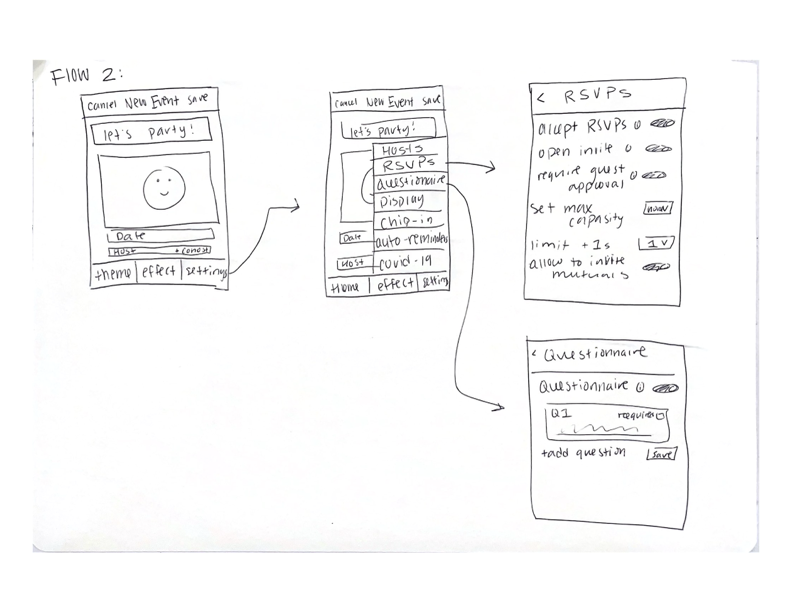
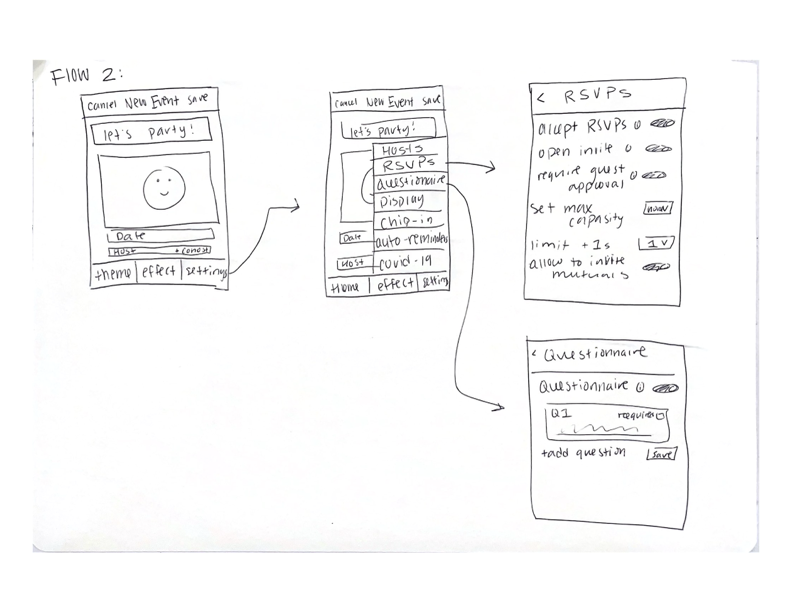
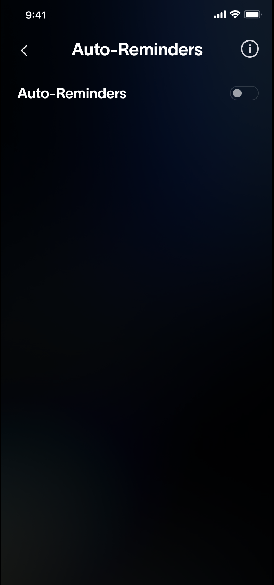
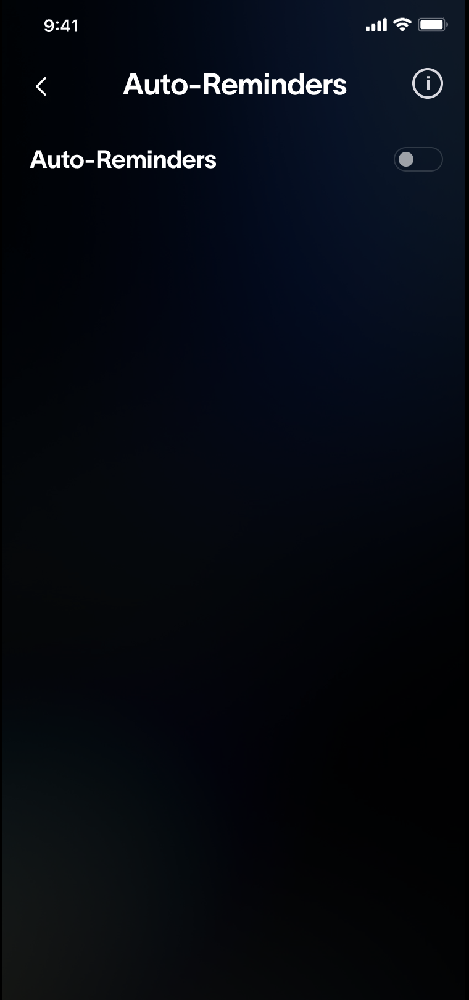

LoFi Mockup
Our goal was to make event settings more prominent and easier to navigate for hosts on the mobile version. Some issues we noticed were that some settings sections are hidden by horizontal-scrolling, are very wordy, and are redundant as some settings are already a part of the Create Event page. We decided to focus on making the Settings tab more digestible, and prioritized this over changing the Create Event page.
We explored a few options for the Settings page through our various sketches that showcased several different ways in which we could address these issues. We noticed that the current mobile settings page has a lot of unnecessary whitespace, so we thought about putting all the settings on one long, scrollable page, where each section comes one after the other. Users would have been able to skip to a section they were looking for either by using the same horizontal scrolling menu that already exists or through a drop down menu. However, we ultimately decided against vertical scrolling because we thought it would only make the overwhelming nature of the settings worse.
Another idea from our sketches was having the Settings menu not be full screen. Once users select a category, the Setting screen would be full screen. This would make the menu feel more integrated with the main Create Event page, but we decided that this would make the menu cramped and smaller, which would not help with readability.
In the end, we decided to go with a design that mimics the iPhone settings application. We realized that we wanted to prioritize ease of use for the users, and a setting page with this style allowed for familiarity. After discussing it, we also decided to remove Chip In and Add Co-Hosts from this section because it already exists in the main Create Event page – removing it makes the settings page less confusing and redundant. Finally, since we noticed that some of the info about each setting was wordy and tended to distract and confuse users, we decided to add an info button that, when pressed, displays information about that specific setting.
We decided to wireframe only the settings page because that is where the majority of our changes will exist. Once the user clicks the Settings button at the bottom of the event editing page, this is the settings page they will be brought to. As previously mentioned, we wanted to have all the settings listed on one page in this way so that users can see all the possible setting categories at once. Then, if the user clicks one of the setting categories, they are brought to that settings page. The more detailed descriptions are hidden in information buttons. If the user wishes to go back to the main settings page or the edit event page, all they have to do is press the back arrow at the top.


 



 
